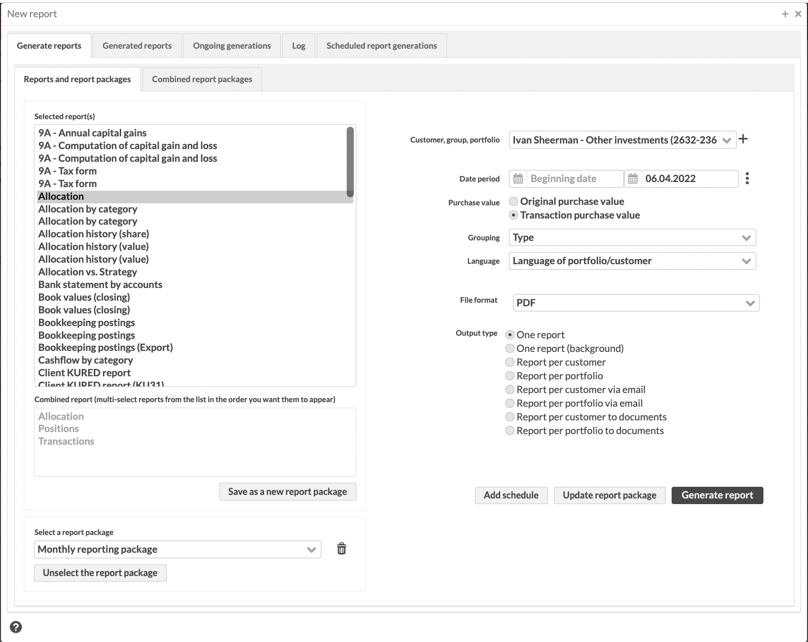

Report window
Report window allows you to generate reports - you can either generate individual reports, mass-generate reports to a group of portfolios, send reports via email, or publish reports to documents. Everything related to reporting is available in the Report window.
You can access the report window either from the New report option in the New menu, or from the New report icon on Overview and standard search views. In addition, you can open reports as tabs on the Overview.
To generate a report, start by selecting a report from the listing on the left. The reports listing allows you to select from:
Any standard reports installed through FA AppStore.
Any query-based report templates you have saved from the Queries view. Report templates can only be used as a PDF, and are indicated in the listing with the suffix (PDF) after report template name.
Any PDF report template you have uploaded to the system. Report templates can only be used as a PDF, and are indicated in the listing with the suffix (PDF) after report template name.
Any custom report developed for you and installed through FA AppStore.
Any custom report developed and published through JSReport.
|  |
Report generation parameters
Based on the report you selected, available report parameters on the right vary. Parameters that are available only for certain reports are shown below in brackets.
Some fields, for example, Transaction type or Security type, allow you to restrict the content of the report to show only certain kind of data - if not filled in, all data within your portfolio during the reporting time is included in the report.
- Saved search
(Available if you run reports from the Transactions or Trade orders view). The saved search you want to create the report for. See Generate reports for transactions and trade orders in FA User guide for details.
- Customer, Group, Portfolio*
(Available if you run reports from the Contacts or Portfolios view). Customer, group or portfolio you want to create the report for. You can set the report to be created for multiple customers, portfolios or groups by choosing it from the field and clicking the + button: the selection is listed below the field, and you can add other selections to the listing. You can delete a customer, portfolio or group listed below the field with the - button. You can create a report with the following selections:
Choosing one or more portfolios (if a portfolio is chosen on the Overview, this portfolio is the default selection for the report)
Choosing one or more contacts (if a contact is chosen on the Overview, this contact is the default selection for the report)
Choosing one or more groups
Choosing #All, when the chosen report is created for all portfolios in the system
- Date
The Report date or Date period (see also Selecting dates). Depending on the nature of the report and the data shown on the report, you need to either select a single date, a date range or no date at all. For example, reports showing positions or allocation naturally show data for a single data, whereas reports showing transactions or a history of figures naturally react to a date range.
- (Purchase value)
Original purchase price and Transaction purchase price. The selection tells whether the reports always show the transaction purchase price, or whether the reports show the original purchase price of transactions that original transaction information is defined to. The default selection of the purchase price used can be set in Preferences - Transactions.
- (Securities)
Security, if you want to create a report based on only one security
- (Grouping)
Grouping of your report's content from alternatives Security type, Security, Class 1 - 5, Country, Market place, Currency, Counter, Issuer, Asset class or Asset type (available for older reports), or from alternatives Portfolio, All portfolios, Portfolio type, Portfolio's country, Portfolio's juridical form, Portfolio's contact, Security, Position, Linked security, Type, Subtype, Basetype, Class 1 - 5, Country, Currency, Marketplace, Settlementplace, Tag, Issuer, Asset class, Asset type, Assets and liabilities and Assets and accounts by category.
- (Allocation group)
If you have selected a grouping that involves asset classes or asset types, select also the allocation group (defined in Preferences) you want to use.
- (Transaction types)
Transaction types to be printed out on the created report from the alternatives, which are defined in Preferences - Transaction types. You can choose multiple transaction types from the list by holding the Ctrl key and choosing the needed transaction types.
- (Reference, Counter)
Reference or counter.
- (Tags)
Transaction tags to limit the transactions included in the report.
- (Security type)
Security types to be printed out on the created report from the alternatives, which are defined in Preferences - Security types. You can choose multiple security types from the list by holding the Ctrl key and choosing the needed security types.
- Language
language of the report: Customer/Portfolio language, Svenska, Suomi or English. The languages available are defined in Preferences - Language. The default selection is the Language of portfolio/customer, when the language of the report will be the language set for the portfolio in the Basic info of the Portfolio window. In order to being able to print reports in different languages, you would need to define appropriate translations for security types, transaction types, etc. thorough Preferences - General - Internationalization.
- (Print reports even if empty)
Print out report(s) even if they would be empty, e.g. the report has no content. If checked, report will always be printed out, even if it has no content. If not checked, when creating only one report, the report is not opened if it is empty, and when creating multiple reports (either per portfolio or per customer), empty reports are not created into the specified folder.
- File format
File format of the report to be created: PDF, XLS, XLSX, CSV, TXT, DOCX, PPTX, RTF, XML, XHTML.
- Output type
Output type of the report
One report - prints out one combined report for the selection of the Customer, Group, Portfolio selection, if possible. The generated report ones up on the screen after the report generation is finished.
One report (background) - similar to the One report option, but the report is run in the background (a good choice when generating large reports or reports requiring heavy calculations - when the report is run in the background, the FA Portfolio can be used while the report is generating). The report can be found in the Generated reports tab.
Report per customer or Report per portfolio - prints out a report (or combination of reports is multiple reports are chosen) for each customer or each portfolio chosen in Customer, Group, Portfolio. The individual reports can be found in the Generated reports tab.
Report per customer via email or Report per portfolio via email - see sending reports via email for more details.
Report per customer to documents or Report per portfolio to documents - see publishing reports to documents for more details.
- (Folder name)
Name for the folder for the created reports. All characters except for specialu charaters, such as "+", "%", "*", and so on, are allowed. The reports are saved to a folder with the defined name, and can be downloaded from the Generated reports tab. Folder name you define here is extended with a time stamp when the folder was created (following the syntax Folder-yyyyMMdd-hhmmss), ensuring that even if you use the same folder name, reports within one generation always go to a unique folder (available from FA 3.11 onward).
The field is visible only if you chose the output type other than One report.
- (Email template)
Select the email template you want to use. This field is visible only if output type is selected as Report per email, and it pre-fills the template used when sending reports via email.(Available from FA 3.11 onward).
- (Transaction tags)
(Available if you run reports from the Transactions view). Transaction tags to assign to the transactions after they are already reported, for example, "Confirmation sent". You can use this option to filter out the transactions for which you already created the reports.
- (Trade order tags)
(Available if you run reports from the Trade orders view). Trade order tags to assign to the trade orders after they are already reported, for example, "Confirmation sent". You can use this option to filter out the trade orders for which you already created the reports.
After you have filled in the report parameters, Generate report button allows you to open the report in the chosen file format or save the reports to a folder, when they can be opened from the Generated reports tab. If the output type was chosen to be Report via email, a new window opens up for you to define the details of email reporting.
The combination of the selected group, customer and portfolio together with the selected output type allows you to efficiently create different kinds of reports. For example, selecting a group in the group, customer and portfolio field and defining the output type to be either report per portfolio or report per customer generates separate reports per each portfolio/customer within the group - there is no need to create the same report for each portfolio/customer separately, but you can generate these at once and fetch the individual reports from the Generated reports tab after the reports have been created. Additionally, if selecting a group in the group, customer and portfolio field and defining the output type to be one report, you get one aggregated report of the contents of the portfolios within the group.
Combined report
In addition to generating a single report, you can also choose multiple different reports to be combined in a single PDF file: this allows you to print out a combined report with different individual reports on their separate pages, but in a single multi-page PDF file.
To generate a combined report, multi-select reports from the report listing to include them in your report. The order you multi-select your reports in is the order the reports will appear in your combined report - the order is also indicated at the bottom of the Report window.
Note
This functionality is only available for PDF reports.
Report packages
In addition to generating a combined report on the spot, you can save your combined report and the report generation parameters for later use as a report package. You can make the report package visible only to yourself or choose to share the report package with other FA users.
To save selected reports as a report package:
Open the report window and multi-select reports as a combined report. Essentially, saving a report package means saving a combined report for later use.
Define the report generation parameters on the right. When saving a report package, the parameters are saved along with the package for later use. (Available from FA 3.11 onward - before that, parameters were not saved along with a report package).
Once you are happy with the content and order of your combined report, click Save as a new report package.
Define a name for your report package - this name will be used in the file name of the generated report (define the report file naming syntax in Reporting Preferences), and to list the report in the report package listing.
Decide which users you want to share the report package with, i.e. which users can see and use the report package in the Report window:
Not shared – The package is saved only for you to use.
Shared with everyone – The package is available for everyone to use.
Shared with group xx – The package is available for the users in a specific user group. The list of groups includes user roles assigned in the FA Admin Console app (for details, see User details pane).
Shared with role xx – The package is available for the users with a user role defined on the system level.
To use a saved report package:
Open the Report window.
The Report window opened from the Portfolios and Contacts views, and from the New → New report menu features all report packages you created before.
The Report window opened from the Transactions or Trade orders view features only report packages that include at least one transaction or trade order report.
Select the report package at the bottom of the Report window. You can see the reports within the package in the combined report section, and the report generation parameters are shown on the right.
If your selected report package contains a report that is no longer available (the report has been uninstalled after you have saved your report package), you'll get a confirmation to generate the report package anyway without the unavailable report(s).
If needed, edit the report generation parameters on the right.
Click Generate report.
To delete a report package, select it from the list and click the trash can icon . This will not delete the reports within the package, but just remove the report package from the list. To modify your report package, make changes in the selected reports or the parameters and click Update report package.
Note
If you have a report package selected, you can't select reports since the report listing shows you the content of your report package - Unselect the report package to use the Report window manually again.
The Generated reports tab shows the generated reports. The reports are visible on the tab sheet when multiple reports or reports on background are generated: one report created opens up on directly, but multiple reports are stored on the server, where they can be downloaded to be viewed on your computer.
The reports are saved in folders, which are named based on the information given on the previous tab sheet. The folders can be seen at the top of the window, in the Folders area: you can download a folder to your computer, or you can view the reports saved inside this folder by clicking it from the folder listing. The reports within the chosen folder appear at the bottom of the window, in the Reports area.
The following functions are available through right-clicking the folder or report
- Open
Opens and downloads the chosen folder as a zip package or an individual report (a folder or report can also be opened by double-clicking it).
- Delete
Deletes the chosen folder or individual report.
The following buttons are available:
- Delete reports
Deletes the chosen folder with all the reports in it.
- Download reports (ZIP) (WIN)
Downloads the chosen folder as a zip folder, if there are multiple reports in the folder, or as a single file, if the folder only includes a single report. Use this button when you are using Windows operating system / Windows computer.
- Download reports (ZIP) (OS)
Downloads the chosen folder as a zip folder, if there are multiple reports in the folder, or as a single file, if the folder only includes a single report. Use this button when you are using OS operating system / Mac computer.
- Download reports (PDF)
Downloads all the reports in the chosen folder as one pdf file.
Status report from report generation
Whenever the system generates reports in the background and saves them under the Generated reports tab, the system produces a status report out of the generation. The status report is saved along with the report files into the same folder under the Generated reports tab - you can find it among the report files with the name Report_summary.csv. (Available from FA 3.11 onward)
The status report provides you with details on which reports were generated successfully and which reports failed, allowing you to more easily follow up and get a grasp of the status of your reporting. In addition to the success or failure of each report, the status report includes relevant information on which group, customer or portfolio the report was generated to, for which dates and with what file type. In addition, if you were sending reports via email, the email address the report was sent to is included in the status report. This allows you to easily replicate a generation, for example if a couple of reports failed to be generated while most of your reports were generated successfully.
The Ongoing generations tab sheet shows the ongoing report generations: if the report generation includes multiple reports, the progress of the generation is shown on this tab sheet. The report generation can also be cancelled on this tab sheet.
The Log tab sheet shows the report generations performed and the history of email reporting: the tab sheet shows the date and time, when a report was created, as well as a description of the report generating activity.
The following buttons are available:
- Clear
Clears the log listing
- Refresh
Refreshes the listing to show the latest actions.
Scheduled report generations tab lists all the report packages that have been scheduled to be generated automatically by the system. The tab lists all report packages with a schedule defined for them (ordered by next upcoming generation), shows each packages' next scheduled generation, and allows you to remove or edit any given schedule directly through the tab. (Available from FA 3.11 onward)